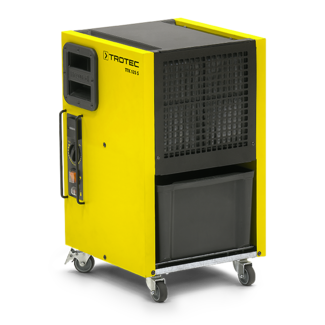

Osuszanie
OSUSZANIE KONDENSACYJNE
Wychodząc naprzeciw problemowi nadmiernej wilgoci, między innymi we wnętrzach budynków, firma
PO-SZKODZIE.PL w swoim zakresie usług, oferuje osuszanie z wykorzystaniem technologii
kondensacyjnej. Głównymi atutami tej metody jest jej wysoka skuteczność przy stosunkowo niskich
kosztach realizacji, bezinwazyjność oraz brak jakiegokolwiek ryzyka stosowania.
Urządzenia, którymi dysponujemy, to wysokiej klasy wentylatory oraz osuszacze marki Trotec z
serii TTK-s. Charakteryzująca się wysoką wytrzymałością oraz wydajnością aparatura,
przystosowana jest do nawet najbardziej wymagających warunków pracy.
PROCES OSUSZANIA
Zjawiskiem, które odgrywa kluczową rolę w proponowanej przez naszą firmę metodzie osuszania,
jest kondensacja, czyli skraplanie pary wodnej. Osuszacze kondensacyjne mają za zadanie w
sposób naturalny przyspieszyć proces schnięcia. Zmniejszanie wilgotności we wnętrzu urządzenia,
następuje poprzez spadek temperatury poniżej punktu rosy (temperatura skraplania gazów).
Oziębione powietrze skrapla się, a zgromadzona w zbiorniku woda odprowadzana jest bezpośrednio
do kanalizacji lub też na zewnątrz budynku. W ten sposób otrzymane, osuszone, powietrze zostaje
ogrzane i powraca do obiegu powodując szybsze odparowanie wody z zawilgoconych powierzchni.
Cały powyższy proces trwa do momentu osiągnięcia wymaganego poziomu wilgotności. Czas osuszania
zależy od wielu czynników, m.in. od gabarytów pomieszczenia lub powierzchni, temperatury oraz
poziomu wilgotności.
ZASTOSOWANIE
Usługi z zakresu osuszania kondensacyjnego, przeprowadzane są wyłącznie przez wykwalifikowanych
pracowników firmy PO-SZKODZIE.PL. Dokonujemy również niezbędnych pomiarów wilgotności
powietrza. Zapraszamy do konsultacji.
Nasze spektrum działania obejmuje:
- wsparcie dla branży remontowo - budowlanej: osuszanie kondensacyjne w budownictwie
przyspiesza postępy prac i usprawnia wdrażanie kolejnych etapów wykończeniowych. Wpływa także
na trwałość i wytrzymałość konstrukcji, efektywnie usuwając nadmiar wilgoci technologicznej ze
ścian, tynków czy posadzek.
- usuwanie skutków zalania, podtopienia, awarii instalacji wodnej: wszędzie tam gdzie doszło do
nieoczekiwanego nagromadzenia się wody, po usunięciu źródła powstawania problemu, niezbędne
jest dokonanie procesu profesjonalnego osuszania kondensacyjnego. Zastosowanie tej metody
pozwoli na skuteczne przywrócenie budynkom należytego stanu, a także zapobiegnie powstawaniu i
rozwojowi szkodliwych dla zdrowia pleśni i grzybów.
- eliminowanie problemu wilgoci w magazynach: stabilizacja poziomu wilgotności w powierzchniach
magazynowych zapobiega generowaniu strat wynikających z nieodpowiedniego składowania produktów
wymagających ściśle określonych warunków (np. zbrylanie produktów sypkich, korozja elementów
metalowych, odkształcanie papieru).